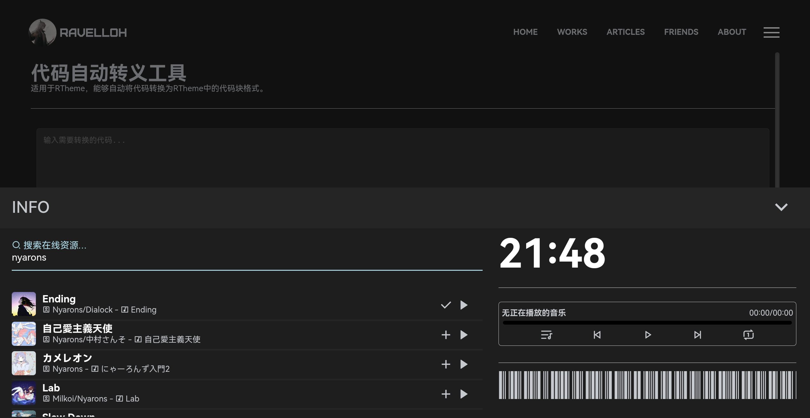
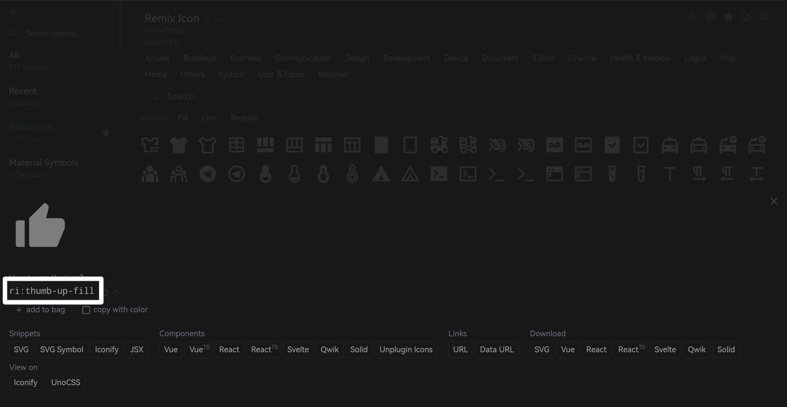

欢迎来到RTheme。当你看到这篇文章时，说明你的RTheme已经部署。
不过，你仍需要对主题进行个性化处理，详阅#从模板开始。
个性化设置后，RTheme应该就已经正常运行了。你可以另外配置Twikoo评论、Umami统计服务、BetterStack的Uptime服务，来获取更丰富的主题功能。详阅#配置边缘服务。
之后，你可以进行添加文章等操作，但首先应该熟悉一下RTheme的文章语法。
与其他主题不同，RTheme默认的标记语言是HTML而不是Markdown，因为HTML可以提供更丰富的功能。不过，你仍可使用Markdown写作，并使用API将其转换为HTML。RTheme向下兼容所有的Markdown语法。
我编写的一个可用的API示例见下，你可以传递给它你的Markdown文件路径，它会返回转换后的HTML内容。
Github RavelloH/markdown-it-api
支持的语法展示
段落分隔
<p>
这是一个普通段落。
</p>
<p>
这是第二个段落。
</p>
<p class="center">
这是个居中的段落。
</p>
这是一个普通段落。
这是第二个段落。
这是个居中的段落。
标题
h1表示文章的主标题，所以文章内容中可用的超链接包括h2 h3 h4 h5 h6。主题会自动标题渲染锚点、样式？目录等，所以在使用时只需要使用标准html格式：
<h2>这是一个h2标题</h2>
<h3>这是一个h3标题</h3>
超链接
超链接在RTheme中一共分六种，可以按需使用。
其中，三种高级超链接(箱式超链接、箱式音乐盒、箱式下载盒)使用时的语法基本与普通超链接相同，不过要使用它们需要在普通超链接的基础上添加type属性来注明它们的类型。
内部超链接
<a href="/articles/">这是一个指向/articles/的内部超链接</a>，它的颜色跟其他的字体有区别，但是没有图标和下划线。
<a href="https://ravelloh.top/" class="noline">这是一个指向https://ravelloh.top/的外部超链接</a>，它有一个名为<code>noline</code>的类名，所以跟内部链接表现相同。
这是一个指向https://ravelloh.top/的外部超链接，它有一个名为
noline的类名，所以跟内部链接表现相同。
外部超链接
<a href="/articles/" class="link">这是一个指向/articles/的内部超链接</a>，但是它有一个名为<code>link</code>的类名，所以它表现的与外部链接相同。
<a href="https://ravelloh.top/">这是一个指向https://ravelloh.top/的外部超链接</a>，它具有下划线和图标来表示它指向站外。
link的类名，所以它表现的与外部链接相同。这是一个指向https://ravelloh.top/的外部超链接，它具有下划线和图标来表示它指向站外。
主题会自动为目标为http或https的超链接添加此样式，不过你可以设置
noline的类名来取消此样式。
按钮式超链接
<a href="/articles/" class="button">Articles</a>
<a href="/works/" class="button">Works</a>
<a href="/about/" class="button">About</a>
箱式超链接
箱式超链接依赖我自己搭建的网页截图API，不过，你也可以自己部署。它的使用方式十分简单，主题会自动添加额外的属性。
<a href="https://ravelloh.top/" type="link-box">RavelloH's Blog</a>
箱式音乐盒
"＋"复制超链接。之后，将其粘贴到文档内即可。RTheme会自动生成相应结构及信息。 
<a href="http://music.163.com/song/media/outer/url?id=1477655546.mp3" type="music-box" info="<span class='music-search-author'> <span class='i_small ri:account-box-line'></span> West & Zander - <span class='i_small ri:mv-line'></span> Deep Breathing</span>" src="http://p1.music.126.net/FDE2goZS7DJ3HhIBFsQEMQ==/109951165303988707.jpg">Autumn Haze</a>
Autumn Haze 你也可以手动设置，需要设置的项如下:
| 项 | 描述 | 默认值 |
|---|---|---|
| type | 设置为music-box以启用音乐盒 | undefined |
| href | 指向的音乐文件链接 | undefined |
| info(可选) | 显示的音乐附加信息，会在第二行显示 | "无更多信息" |
| src(可选) | 显示的封面图像 | /assets/images/music.jpg |
箱式下载盒
<a href="https://drive.ravelloh.top/api/raw/?path=/video/%E9%AC%BC%E6%B3%A35.mp4" type="download-box">鬼泣5测试视频.mp4</a>
信息栏
<div class="info">
这是个普通信息栏。
</div>
<div class="info-success">
这个信息栏可以用来表示成功的消息。
</div>
<div class="info-warning">
这个信息栏可以用来表示警告的消息。
</div>
<div class="info-alert">
这个信息栏可以用来表示失败的消息。
</div>
<div class="info-alert center">
<span class="i_small ri:spam-line"></span> 这是个居中的信息栏，并且带有小图标。
</div>
代码
行内代码
你可以直接使用<code>内容</code>来插入行内代码，效果如本句。
代码块
带有行数显示的代码块
因此，我做了个自动转换器，可以直接转换为此格式代码。https://ravelloh.top/tools/code/
codeline的代码块会被自动语法高亮。你可以删除此类名来禁用对单个代码块的语法高亮。
<div class="codeline">
<pre>
<span><details> </span>
<span> <summary>Show</summary></span>
<span> <!-- readme-tree start --></span>
<span> <!-- readme-tree end --></span>
<span></details></span>
</pre>
</div>
<details>
<summary>Show</summary>
<!-- readme-tree start -->
<!-- readme-tree end -->
</details>
无行数代码块
<pre>
<code class="language-js">
function getSearchData() {
if (typeof searchData == "undefined") {
return new Promise((resolve, reject) => {
fetch(dataFilePath, {})
.then((response) => response.json())
.then((data) => {
searchData = data;
resolve(data);
});
}).catch((err) => {
throw err;
});
} else {
return Promise.resolve(searchData);
}
}
function search(keyword) {
let start = new Date().getTime();
if (keyword == "" || keyword == ".") {
return false;
}
searchWord = HTMLDecode(keyword);
getSearchData().then((data) => {
if (typeof searchWorker == "undefined") {
searchWorker = new Worker(workerPath);
}
searchWorker.onmessage = (result) => {
let end = new Date().getTime();
let data = result.data;
console.log(`查询操作用时${end - start}MS`);
if (data.length == 0) {
console.log("未找到有关选项");
return false;
}
let resultHTML = "";
data.forEach((e, index) => {
resultHTML += structureSearchResult(e);
});
console.log(resultHTML); // 结果输出
};
searchWorker.postMessage([data, searchWord]);
});
}
</code>
</pre>
function getSearchData() {
if (typeof searchData == "undefined") {
return new Promise((resolve, reject) => {
fetch(dataFilePath, {})
.then((response) => response.json())
.then((data) => {
searchData = data;
resolve(data);
});
}).catch((err) => {
throw err;
});
} else {
return Promise.resolve(searchData);
}
}
function search(keyword) {
let start = new Date().getTime();
if (keyword == "" || keyword == ".") {
return false;
}
searchWord = HTMLDecode(keyword);
getSearchData().then((data) => {
if (typeof searchWorker == "undefined") {
searchWorker = new Worker(workerPath);
}
searchWorker.onmessage = (result) => {
let end = new Date().getTime();
let data = result.data;
console.log(`查询操作用时${end - start}MS`);
if (data.length == 0) {
console.log("未找到有关选项");
return false;
}
let resultHTML = "";
data.forEach((e, index) => {
resultHTML += structureSearchResult(e);
});
console.log(resultHTML); // 结果输出
};
searchWorker.postMessage([data, searchWord]);
});
}
引用
<blockquote>
曾经有人说过，....
</blockquote>
曾经有人说过，....
文字控件
<h4>粗体</h4>
你可以<b>加粗</b>一段文字。
<h4>强调</h4>
你可以<strong>强调</strong>一段文字。
<h4>斜体</h4>
你可以<em>斜体显示</em>一段文字。
<h4>下划线</h4>
你可以为一段文字添加<u>下划线</u>。
<h4>删除线</h4>
你可以<del>删除</del>一段文字。
<h4>添加线</h4>
你可以<ins>添加</ins>一段文字。
<h4>键盘文本</h4>
你可以用<kdb>TAB</kdb>和<kdb>SHITF</kdb>+<kdb>TAB</kdb>来在网页中移动。
<h4>行内引用</h4>
《国语·周语下》是<q>众口铄金，积毁销骨</q>的出处。
<h4>引用来源</h4>
这篇文章来源于<cite><a href="https://ravelloh.top/articles/20230815/">RavelloH的博客</a></cite>。
<h4>突出显示</h4>
<mark>这段文字</mark>是高亮突出显示的。
<h4>注音</h4>
<ruby>汉 <rp>(</rp><rt>han</rt><rp>)</rp> 字 <rp>(</rp><rt>zi</rt><rp>)</rp></ruby>
<h4>下标</h4>
这段文本包含 <sub>下标</sub>
<h4>上标</h4>
这段文本包含 <sup>上标</sup>
粗体
你可以加粗一段文字。强调
你可以强调一段文字。斜体
你可以斜体显示一段文字。下划线
你可以为一段文字添加下划线。删除线
你可以添加线
你可以添加一段文字。键盘文本
你可以用行内引用
《国语·周语下》是众口铄金，积毁销骨的出处。
引用来源
这篇文章来源于RavelloH的博客。突出显示
这段文字是高亮突出显示的。注音
汉 字下标
这段文本包含 下标上标
这段文本包含 上标媒体内容
图片
alt信息将会被主题显示在图片底部。
<img src="https://drive.ravelloh.top/api/raw/?path=/img/Sekiro%E2%84%A2_%20Shadows%20Die%20Twice_20220827210734.jpg" alt="游戏《只狼-影逝二度》中的成就截图">

视频
<video src="https://drive.ravelloh.top/api/raw/?path=/video/鬼泣5_片段.mp4" controls="controls"></video>
音频
你可以使用传统的audio标签来嵌入音频，不过实际上更好的选择是使用RTheme的内置播放器。你可以参考#箱式音乐盒来配置。
时间
<time>2023-08-14 10:46:53</time>
大型文本框
<textarea name="test" id="test" rows="4" cols="40" placeholder="这是一个文本框"></textarea>
表格
<table>
<thead>
<tr>
<th>功能名</th>
<th>描述</th>
<th>可选值</th>
<th>默认值</th>
</tr>
</thead>
<tbody>
<tr>
<td>showall</td>
<td>是否展示所有文件及目录</td>
<td>yes/no</td>
<td>yes</td>
</tr>
<tr>
<td>showdirectoryname</td>
<td>仅展示文件夹名</td>
<td>yes/no</td>
<td>no</td>
</tr>
<tr>
<td>showchangetime</td>
<td>显示更改时间(废弃参数，不可用)</td>
<td>-</td>
<td>no</td>
</tr>
<tr>
<td>showsize</td>
<td>以字节为单位，显示文件大小</td>
<td>yes/no</td>
<td>no</td>
</tr>
<tr>
<td>showallname</td>
<td>显示相对路径</td>
<td>yes/no</td>
<td>no</td>
</tr>
<tr>
<td>ignoregit</td>
<td>隐藏.git文件</td>
<td>yes/no</td>
<td>yes</td>
</tr>
</tbody>
</table>
| 功能名 | 描述 | 可选值 | 默认值 |
|---|---|---|---|
| showall | 是否展示所有文件及目录 | yes/no | yes |
| showdirectoryname | 仅展示文件夹名 | yes/no | no |
| showchangetime | 显示更改时间(废弃参数，不可用) | - | no |
| showsize | 以字节为单位，显示文件大小 | yes/no | no |
| showallname | 显示相对路径 | yes/no | no |
| ignoregit | 隐藏.git文件 | yes/no | yes |
列表
<ul>
<li>Coffee</li>
<li>Tea
<ul>
<li>Black tea</li>
<li>Green tea
<ol>
<li>China</li>
<li>Africa</li>
</ol>
</li>
</ul>
</li>
<li>Milk</li>
</ul>
- Coffee
- Tea
- Black tea
- Green tea
- China
- Africa
- Milk
分隔线
主题中的分割线一共分为两种，你可以在其中自由使用。
它们的区别是，有light类名的hr标签会比默认标签更细、边距更小，推荐在文章内部使用。
同时，为了保证一定的段落间隔，推荐在使用时加上两个br标签，总体如下：
<br><br><hr class="light">
<hr class="light">
<hr>
图标
RTheme使用Remix icon作为本体的默认图标集。你可以自由使用持续更新的超过2500个风格统一的图标。
使用方法非常简单，但首先你需要找到你需要的图标：
Icones.js - Remix Icon
你可以在其中搜索来找到你需要的图标。之后，单击需要的图标，复制其名称（格式如ri:xxxxx）

之后，你可以这样使用该图标：
<span class="i_small ri:thumb-up-fill"></span>
除了
i_small，主题中内置5种不同大小的图标，你可以自由使用。
<span class="i_small ri:thumb-up-fill"></span><br>
<span class="i_mini ri:thumb-up-fill"></span><br>
<span class="i ri:thumb-up-fill"></span><br>
<span class="i_big ri:thumb-up-fill"></span><br>
<span class="i_large ri:thumb-up-fill"></span><br>
编写并发布文章
你可以使用上文中的HTML语法或转换成HTML的markdown语法自由创作。之后，使用下面的步骤来发布它：
确定文章信息
你需要确定文章的信息。这包括如下信息:| 值 | 描述 |
|---|---|
| ${articlesName} | 文章的标题，不宜过长 |
| ${articlesPath} | 指定其在/articles/文件夹中的路径，默认应该是一串无分隔的日期，如20230815 |
| ${articlesTime} | 文章的发布日期，如2023-08-15 |
| ${articlesClass} | 文章的分类，数量不限 |
| ${articlesTag} | 文章的标签，数量不限 |
| ${articlesContext} | 文章的内容 |
复制模板文件
前往你的主题根目录下的/articles/文件夹，创建一个新的文件夹用于保存你的新文章。建议这个新的文件夹名为${articlesPath}，也就是一串无分隔的日期，能表示其发布时间，如20230815。这样可以帮助搜索引擎索引此文章。
复制文件，将根目录下的模板文件
/template/articles/index.html复制到你的新文章的位置/articles/${articlesPath}/index.html。
更改文章信息
编辑你复制到新位置的新文章，修改其中的变量。变量包括#确定文章信息中的6个变量。你可以an自己的需要，增加或减少文章的分类和标签的数量。默认情况下，模板中提供了3个标签和3个分类。
在此过程中，你可以随时预览文章的显示效果。你需要先安装
Node.js环境，之后使用命令行工具转到主题根目录，之后运行：
npx http-server -c-1
http://localhost:8080
更改索引信息
等到文章更改完毕后，打开/articles/index.html，添加你的新文章。它的模板内容如下：
<div class="loading listprogram">
<article>
<span class="article-name">
<h4><a href="/articles/${articlesPath}/">${articlesName}</a></h4>
</span>
<p class="articles-info">
<time>${articlesTime}</time> • <span class="i_small ri:archive-line"></span>
<span class="class">
<a>${articlesClass}</a>/
<a>${articlesClass}</a>/
<a>${articlesClass}</a>
</span>
</p>
<p class="articles-tags">
<a>${articlesTag}</a>
<a>${articlesTag}</a>
<a>${articlesTag}</a>
</p>
</article>
<hr>
</div>
发布更改
至此，你的新文章已经添加完成。如果你使用Github存储主题，直接使用git提交即可。RTheme框架会在云端自动使用Github Actions来为你的文章更新索引、订阅信息及站点地图、旁路推荐等。不过，如果没有使用Github，你也可以在本地提前运行。转到你的主题根目录，运行以下命令：
cd program
npm install
node search.js
node feed.js
node fileList.js
git pull
git status
git add .
git commit -m "添加新文章"
git push